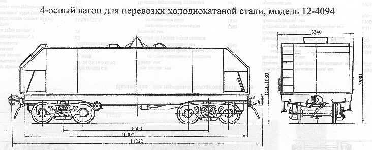

Назначение: для перевозки холоднокатанной стали
Параметры
| Номер проекта | 4094.00.000 |
| Технические условия | |
| Модель вагона | 13-4094 |
| Тип вагона | |
| Изготовитель | АО "Днепровагонмаш" |
| Грузоподъемность, т | 65 |
| Масса тары вагона, т | 30 |
| Нагрузка: статическая осевая, кН(тс) |
232,75(23,75) |
| погонная, кН/м(тс/м) | 82,98(8,47) |
| Скорость конструкционная, км/ч | 120 |
| Габарит | 1-Т |
| База вагона, мм | 6500 |
| Длина, мм: по осям сцепления автосцепок |
11220 |
| по концевым балкам рамы | 10000 |
| Ширина максимальная, мм | 3240 |
| Высота от уровня верха головок рельсов максимальная с колпаком, мм | 3980 |
| Количество осей, шт. | 4 |
| Модель 2-осной тележки | 18-100 |
| Наличие переходной площадки | нет |
| То же с ручным тормозом | нет |
| Наличие стояночного тормоза | есть |
| Масса колпака, т | 4,7 |
| Длина колпака максимальная, мм | 10008 |
| Шлина колпака по боковым стенкам, мм | 3220 |
| Высота колпака, мм: максимальная |
2560 |
| без захватов | 2000 |
| Высота над уровнем пола, мм: средних опор |
714 |
| крайних опор | 780 |
| Количество опор, шт. | 6 |
| Количество перевозимых рулонов, шт. | 4-10 |
| Диаметр рулона, мм | 1100-1600 |
| Ширина рулона, мм | 900-1400 |
| Год постановки на серийное производство | 1995 |
| Возможность установки буфера | нет |